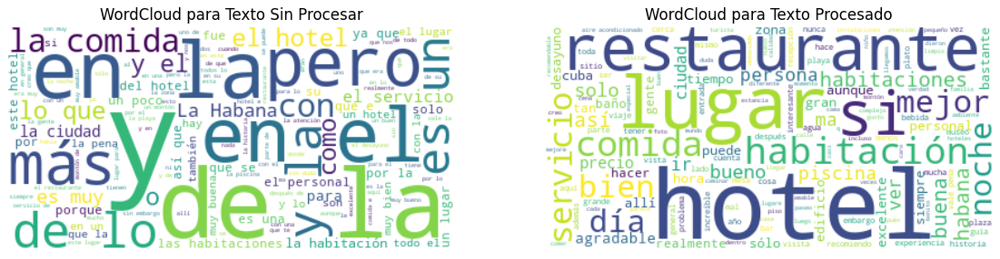
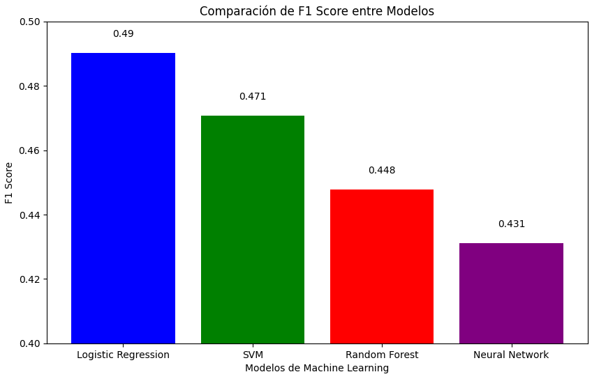

Este proyecto desarrolla un modelo de analítica de textos para evaluar y predecir las calificaciones de sitios turísticos basadas en reseñas de usuarios. A través de dos etapas fundamentales, primero construimos el modelo analítico y luego lo automatizamos y preparamos para su uso en una aplicación final. Utilizamos técnicas de aprendizaje automático para procesar y analizar datos de reseñas de turistas en Colombia, México y Cuba, proporcionados por importantes actores del sector turístico como el Ministerio de Comercio, Industria y Turismo de Colombia y cadenas hoteleras como Hilton. El objetivo principal es mejorar la estrategia turística y la popularidad de los destinos evaluados, identificando factores clave que influyen en las recomendaciones turísticas.
El turismo es un sector vital para la economía global y especialmente significativo para países con ricos destinos culturales y naturales como Colombia, México y Cuba. Este proyecto nace de la necesidad de entender y mejorar la percepción de los turistas sobre estos destinos a través de sus reseñas. En colaboración con el Ministerio de Comercio, Industria y Turismo de Colombia y diversas cadenas hoteleras, se propone desarrollar un modelo de analítica de textos que pueda predecir la calificación de un sitio turístico basada en las reseñas de los usuarios.
Para la etapa 1 implementamos preprocesamiento de datos, junto a tecnicas como normalizacion, tokenizacion y lematizacion. Adicionalmente codificamos el texto con el proposito de facilitarle el trabajo a los modelos que ibamos a usar para la creacion de las predicciones. Implementamos 3 modelos diferentes y calculamos el accuracy para cada uno con el fin de compararlos e identificar el mejor. Para la etapa 2 no solo diseñamos esta pagina web para mostrar nuestro trabajo, diseñamos pipelines para unificar y automatizar carga de datos, preprocesamiento de datos, normalizacion (y las otras tecnicas de procesamiento de datos), al igual que un pipeline para la codificacion de texto y la invocacion del modelo, de igual manera desarrollamos un api para hacer las predicciones, aunque no fuimos completamente exitosos.
Tokenización: Es el proceso de dividir un texto en unidades más pequeñas, llamadas tokens, que suelen ser palabras o frases. Este es un paso fundamental en el procesamiento del lenguaje natural ya que permite a los algoritmos trabajar con elementos individuales del texto.
Normalización: En el procesamiento de texto, la normalización se refiere a un conjunto de técnicas para convertir el texto a una forma estándar. Esto puede incluir convertir todo el texto a minúsculas, eliminar puntuación o caracteres no alfanuméricos, o convertir números a palabras. Facilita el tratamiento uniforme de variantes de palabras o texto.
Lematización: Es el proceso de reducir una palabra a su lema o forma base. A diferencia de la derivación (stemming), que recorta la palabra a un prefijo común, la lematización considera el contexto y transforma la palabra a su forma canónica. Por ejemplo, "corriendo" se lematizaría a "correr".
Regresión Logística: Es un método de clasificación que se utiliza para predecir la probabilidad de una variable categórica, que suele ser binaria, como sí/no o 0/1. A pesar de su nombre, es un modelo de clasificación lineal usado en aprendizaje automático para situaciones donde la respuesta deseada es categórica.
Random Forest: Es un método de ensamblaje que utiliza múltiples árboles de decisión para mejorar la robustez y precisión de la predicción. Cada árbol se construye a partir de una muestra aleatoria de los datos y realiza sus propias predicciones; el resultado final se determina por votación mayoritaria o promedio de los árboles individuales. Caber resaltar que es el metodo que elegimos debido aque tiene una precisión casi del 50%
Red Neuronal (Neural Network): Inspirada en las redes neuronales biológicas, es un conjunto de algoritmos diseñados para reconocer patrones. Las redes neuronales artificiales interpretan los datos sensoriales a través de una especie de simulación del cerebro humano y son capaces de aprender a realizar tareas complejas a través de ejemplos.
Impacto de la limpieza de datos.
Comparación de rendimiento de modelos.
